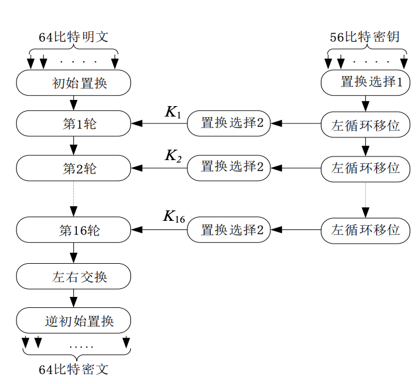
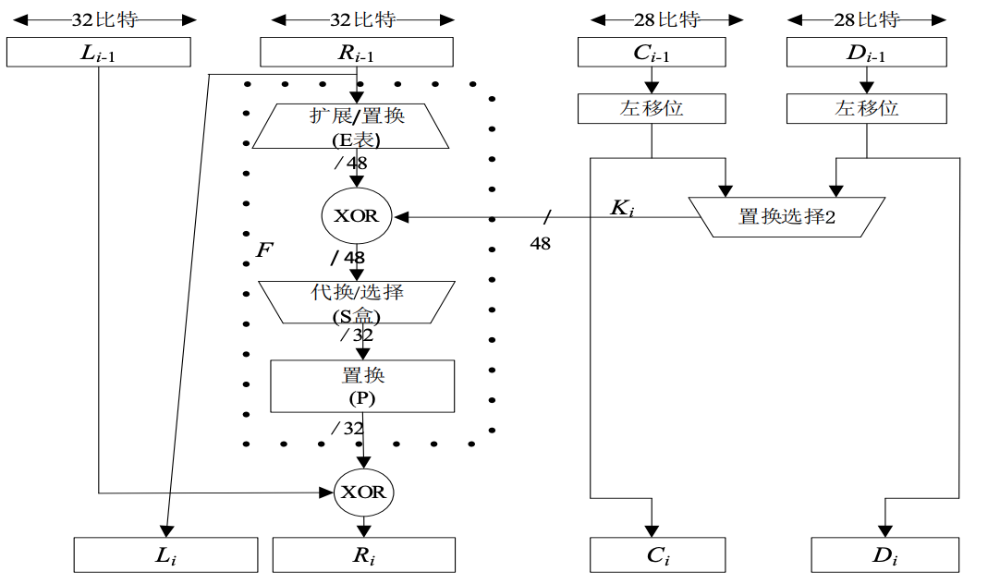

密码学实验报告
南通大学 信息科学技术学院
2110310044-赵涛涛
实验一 DES加密算法实验
实验目的
- 理解对称加密算法的原理和特点
- 理解DES算法的加解密原理
实验背景
DES全称为Data Encryption Standard，即数据加密标准，是一种使用密钥加密的块算法，1977年被美国联邦政府的国家标准局确定为联邦资料处理标准（FIPS），并授权在非密级政府通信中使用，随后该算法在国际上广泛流传开来。需要注意的是，在某些文献中，作为算法的DES称为数据加密算法（Data Encryption Algorithm,DEA），已与作为标准的DES区分开来。
其算法运行需要三个关键参数：key、data、mode。key为加密解密使用的密钥，data为加密解密的数据。mode为其工作模式，当模式为加密模式时，明文按照64位进行分组，形成明文组，key用于对数据加密；当模式为解密模式时，key用于对数据解密。
DES设计中使用了分组密码设计的两个原则：混淆（confusion）和扩散(diffusion)，其目的是抗击敌手对密码系统的统计分析。混淆是使密文的统计特性与密钥的取值之间的关系尽可能复杂化，以使密钥和明文以及密文之间的依赖性对密码分析者来说是无法利用的。扩散的作用就是将每一位明文的影响尽可能迅速地作用到较多的输出密文位中，以便在大量的密文中消除明文的统计结构，并且使每一位密钥的影响尽可能迅速地扩展到较多的密文位中，以防对密钥进行逐段破译。
算法原理
DES算法把64位的明文输入块变为64位的密文输出块，算法所使用的密钥也是64位，DES对64位明文分组进行操作。通过一个初始置换，将明文分组分成左半部分和右半部分，各长32位。然后进行16轮相同的运算，这些相同的运算被称为F函数(是由四步运算构成：密钥置换；拓展置换；S盒代替；P置换；)，在运算过程中数据和密钥相结合。经过16轮运算后左、右部分在一起经过一个置换（初始置换的逆置换），这样算法就完成了。
图1 DES加密整体结构图
图2 每轮结构图
初始置换。 其功能是把输入的64位数据块按位重新组合，并把输出分为L0，R0两部分，每部分各长32位，即将输入的第58位换到第1位，第50位换到第2位，„，依次类推，最后一位是原来的第7位，L0，R0则是换位输出后的两部分，L0是输出的左32位，R0是右32位。
逆置换。 经过16次迭代运算后，得到L16，R16，将此作为输入进行逆置换，即得到密文输出。逆置换正好是初始置换的逆运算。例如，第1位经过初始置换后，处于第40位，而通过逆置换，又将第40位换回到第1位。
F函数的计算。 “扩展置换”是将32位放大成48位，“P盒置换”是32位到32位换位，在（Ri,Ki）算法描述图中，选择函数功能是把6 b数据变为4 b数据。
子密钥Ki(48 b)的生成算法。 由于不考虑每个字节的第8位，DES的密钥从64位变为56位，首先密钥被分成两个部分，每部分28位，然后根据轮数，两部分分别循环左移。
实际运用中，密钥只用到了64位中的56位，其中第8，16，…，64位是校验位，不参与DES运算，故Key实际可用位数只有56位。即：经过密钥置换表的变换后，Key的位数由64位变成了56位，此56位分为C 0，D0两部分，各28位，然后分别进行第一次循环左移，得到C1，D1，将C1(28位)，D1(28位)合并得到56位，再经过压缩置换，从而便得到了密钥K0(48位)。依次类推，便可得到K1，K 2，„，K15。需要注意的是，16次循环左移对应的左移位数要依据表7所示的规则进行。
DES算法加密和解密可以使用相同的算法。加密和解密唯一不同的是秘钥的次序是相反的。就是说如果每一轮的加密秘钥分别是K1、K2、K3…K16，那么解密秘钥就是K16、K15、K14…K1。为每一轮产生秘钥的算法也是循环的。加密是秘钥循环左移，解密是秘钥循环右移。
实验内容
- 熟悉DES算法的基本原理；
- 根据算法原理，编程实现算法；
- 执行程序并分析结果；
实验过程
- 编程环境 Oracle OpenJDK version 16.0.1
- IDEA version 2022.1
- 所需包 commons-io-1.4.jar
实验代码
1 | //加解密过程代码 |
实验结果
1 | 密钥为：123456a812345678d2345678123456c81234567812345678123456d812b45e78 |
结果分析
实验中分别按照明文长度设置了5组明文消息，在使用DES加密算算进行加解密的过程中，我们发现，随着明文长度增加，加密和解密的耗时也增加。并且我们注意到，第2-5组明文加解密的时间在0.1~3ms之间，第1组明文加密时间超过80ms，这明显是非正常的加密时间，可能是将程序初始化的时间也计算于其中。因此在实验中我们设置了多组测试明文进行对比，并弃置每次测试的第一组明文的数据。
明文长度与加解密时间的关系如下表所示：
| 明文长度 | 密文长度 | 加密时间 | 解密时间 |
|---|---|---|---|
| 88 | 96 | 1.1646ms | 0.9766ms |
| 264 | 22 | 2.724ms | 1.6967ms |
| 528 | 536 | 2.1478ms | 3.4234ms |
| 1848 | 1856 | 2.0555ms | 1.2073ms |
从上表中，我们可以观察到另外一个事实，当明文长度为1-7之间，则密文长度为8；明文长度为8-15之间时，加密后的密文长度为16，以此类推。需要注意，上述实验数据仅经过一次实验得出，限于本人的能力，尚且无法在Java环境中进行多轮重复实验，无法获得更为精确的加解密时间，因此上述实验结果仅供参考。
破解DES算法的方法是穷举搜索法。56位长的密钥总共要测试256次，如果每100毫秒可以测试1次，那么需要7.2×1015秒，大约是228,493,000年。但是，仍有学者认为在可预见的将来用穷举法寻找正确密钥已趋于可行，所以若要安全保护10年以上的数据最好。现在多使用3DES加密。
参考：
实验二 AES加密算法实验
实验目的
- 理解对称加密算法的原理和特点
- 理解AES算法的加解密原理
实验背景
密码学中的高级加密标准（Advanced Encryption Standard，AES），又称Rijndael加密法，是美国联邦政府采用的一种区块加密标准。
这个标准用来替代原先的DES（Data Encryption Standard），已经被多方分析且广为全世界所使用。经过五年的甄选流程，高级加密标准由美国国家标准与技术研究院 （NIST）于2001年11月26日发布于FIPS PUB 197，并在2002年5月26日成为有效的标准。2006年，高级加密标准已然成为对称密钥加密中最流行的算法之一 。
算法原理
严格地说，AES和Rijndael加密法并不完全一样（虽然在实际应用中两者可以互换），因为Rijndael加密法可以支持更大范围的区块和密钥长度：AES的区块长度固定为128比特，密钥长度则可以是128，192或256比特；而Rijndael使用的密钥和区块长度均可以是128，192或256比特。加密过程中使用的密钥是由Rijndael密钥生成方案产生。
大多数AES计算是在一个特别的有限域完成的。
AES加密过程是在一个4×4的字节矩阵上运作，这个矩阵又称为“体（state）”，其初值就是一个明文区块（矩阵中一个元素大小就是明文区块中的一个Byte）。（Rijndael加密法因支持更大的区块，其矩阵的“列数（Row number）”可视情况增加）加密时，各轮AES加密循环（除最后一轮外）均包含4个步骤：
- 添加轮密钥—矩阵中的每一个字节都与该次轮密钥做XOR运算；每个子密钥由密钥生成方案产生。轮密钥将会与原矩阵合并。在每次的加密循环中，都会由主密钥产生一把回合密钥（透过Rijndael密钥生成方案产生），这把密钥大小会跟原矩阵一样，以与原矩阵中每个对应的字节作异或（⊕）加法。
- 字节替换—透过一个非线性的替换函数，用查找表的方式把每个字节替换成对应的字节。矩阵中的各字节透过一个8位的S-box进行转换。这个步骤提供了加密法非线性的变换能力。S-box与$GF(2^8)$上的乘法反元素有关，已知具有良好的非线性特性。为了避免简单代数性质的攻击，S-box结合了乘法反元素及一个可逆的仿射变换矩阵建构而成。此外在建构S-box时，刻意避开了不动点与反不动点，即以S-box替换字节的结果会相当于错排的结果。
- 行移位 —将矩阵中的每个横列进行循环式移位。在此步骤中，每一行都向左循环位移某个偏移量。在AES中（区块大小128位），第一行维持不变，第二行里的每个字节都向左循环移动一格。同理，第三行及第四行向左循环位移的偏移量就分别是2和3。128位和192比特的区块在此步骤的循环位移的模式相同。经过ShiftRows之后，矩阵中每一竖列，都是由输入矩阵中的每个不同列中的元素组成。Rijndael算法的版本中，偏移量和AES有少许不同；对于长度256比特的区块，第一行仍然维持不变，第二行、第三行、第四行的偏移量分别是1字节、2字节、3字节。除此之外，行移位操作步骤在Rijndael和AES中完全相同。
- 列混淆—为了充分混合矩阵中各个直行的操作。这个步骤使用线性转换来混合每内联的四个字节。最后一个加密循环中省略列混淆步骤，而以另一个添加轮密钥取代。每一列的四个字节透过线性变换互相结合。每一列的四个元素分别当作$1, x, x^2, x^3$的系数，合并即为$GF(2^8)$中的一个多项式，接着将此多项式和一个固定的多项式$c(x)=3x^{3}+x^{2}+x+2$在模$x^4+1$下相乘。此步骤亦可视为Rijndael有限域之下的矩阵乘法。列混淆函数接受4个字节的输入，输出4个字节，每一个输入的字节都会对输出的四个字节造成影响。因此行移位和列混淆两步骤为这个密码系统提供了扩散性。
实验内容
- 熟悉AES算法的基本原理；
- 根据算法原理，编程实现算法；
- 执行程序并分析结果；
实验过程
- 编程环境 Oracle OpenJDK version 16.0.1
- IDEA version 2022.1
- 所需包 commons-io-1.4.jar
实验代码
AES加解密
1 | package AES; |
测试代码
1 | package AES; |
实验结果
密钥长度：128
1 | 明文1长度：88 |
密钥长度：192
1 | 明文1长度：88 |
密钥长度：256
1 | 明文1长度：88 |
结果分析
AES实验中分别按照明文长度设置了4组明文消息，在使用AES加密算算进行加解密的过程中，我们发现，随着明文长度增加，加密和解密的耗时也增加。另外密钥长度的增加也会使加解密时间增加。
明文长度与加解密时间的关系如下表所示：
| 密钥长度 | 明文长度 | 密文长度 | 加密时间 | 解密时间 |
|---|---|---|---|---|
| 128 | 88 | 96 | 0.1449ms | 0.1454ms |
| 128 | 264 | 272 | 0.1857ms | 0.1841ms |
| 128 | 528 | 544 | 0.234ms | 2.5967ms |
| 128 | 1848 | 1856 | 0.6445ms | 0.4615ms |
| 192 | 88 | 96 | 0.1575ms | 0.2432ms |
| 192 | 264 | 272 | 0.1845ms | 0.2177ms |
| 192 | 528 | 544 | 0.4002ms | 3.0396ms |
| 192 | 1848 | 1856 | 0.5901ms | 0.6833ms |
| 256 | 88 | 96 | 0.1508ms | 0.1596ms |
| 256 | 264 | 272 | 0.2093ms | 0.3756ms |
| 256 | 528 | 544 | 0.3064ms | 2.9697ms |
| 256 | 1848 | 1856 | 0.6144ms | 0.464ms |
明文与密文长度关系:
在原始数据长度为$8$的整数倍时:假如原始数据长度等于$8n$，则使用NoPadding时加密后数据长度等于$8n$，其它情况下加密数据长度等于 $8*(n+1)$。
在不足 16 的整数倍的情况下:假如原始数据长度等于 $8n+m,m<8$其中 $m$ 小于$8$，除了NoPadding填充之外的任何方式，加密数据长度都等于$8(n+1)$；
例如：算法/模式/填充(AES/CBC/PKCS5Padding),明文69字符，则密文为$69=8*8+5$,其中$n$为$8$,$m$为$5$,密文长度为$8(8+1)=72$字节,再转为base64之后，长度也会变长。
需要注意，上述实验数据仅经过一次实验得出，限于本人的能力，尚且无法在Java环境中进行多轮重复实验，无法获得更为精确的加解密时间，因此上述实验结果仅供参考。
实验三 RSA加密算法实验
实验目的
- 理解非对称加密算法(公钥算法)的原理和特点，并理解其与对称加密算法的区别与不同
- 理解RSA算法的加解密原理和签名算法
实验背景
RSA加密算法是一种非对称加密算法，在公开密钥加密和电子商业中被广泛使用。RSA是由罗纳德·李维斯特（Ron Rivest）、阿迪·萨莫尔（Adi Shamir）和伦纳德·阿德曼（Leonard Adleman）在1977年一起提出的。当时他们三人都在麻省理工学院工作。RSA 就是他们三人姓氏开头字母拼在一起组成的。
对极大整数做因数分解的难度决定了 RSA 算法的可靠性。换言之，对一极大整数做因数分解愈困难，RSA 算法愈可靠。假如有人找到一种快速因数分解的算法的话，那么用 RSA 加密的信息的可靠性就会极度下降。但找到这样的算法的可能性是非常小的。今天只有短的 RSA 钥匙才可能被强力方式破解。到2020年为止，世界上还没有任何可靠的攻击RSA算法的方式。只要其钥匙的长度足够长，用RSA加密的信息实际上是不能被破解的。
算法原理
公钥与私钥的产生
假设爱丽丝想要通过一个不可靠的媒体接收鲍伯的一条私人信息。她可以用以下的方式来产生一个公钥和一个私钥：
随意选择两个大的素数$p$和$q$，$p$不等于$q$，计算$N=pq$。
根据欧拉函数，求得${\displaystyle r=\varphi (N)=\varphi (p)\times \varphi (q)=(p-1)(q-1)}$
选择一个小于$r$的整数$e$，使$e$与$r$互质。并求得$e$关于$r$的模逆元，命名为$d$（求$d$令${\displaystyle ed\equiv 1{\pmod {r}}}$）。（模逆元存在，当且仅当$e$与$r$互质）
将$p$和$q$的记录销毁。
$(N,e)$是公钥，$(N,d)$是私钥。爱丽丝将她的公钥$(N,e)$传给鲍伯，而将她的私钥$(N,d)$藏起来。
加密消息
假设鲍伯想给爱丽丝送一个消息${\displaystyle m}$，他知道爱丽丝产生的${\displaystyle N}$和${\displaystyle e}$。他使用起先与爱丽丝约好的格式将${\displaystyle m}$转换为一个小于${\displaystyle N}$的非负整数${\displaystyle n}$，比如他可以将每一个字转换为这个字的Unicode码，然后将这些数字连在一起组成一个数字。假如他的信息非常长的话，他可以将这个信息分为几段，然后将每一段转换为${\displaystyle n}$。用下面这个公式他可以将${\displaystyle n}$加密为${\displaystyle c}$：
${\displaystyle c=n^{e}{\bmod {N}}}$
计算${\displaystyle c}$并不复杂。鲍伯算出${\displaystyle c}$后就可以将它传递给爱丽丝。
解密消息
爱丽丝得到鲍伯的消息$c$后就可以利用她的密钥$d$来解码。她可以用以下这个公式来将$c$转换为$n$：
${\displaystyle n=c^{d}{\bmod {N}}}$
得到$n$后，她可以将原来的信息$m$重新复原。
解码的原理是
$c^d \equiv n^{e \cdot d}\ (\mathrm{mod}\ N)$
已知${\displaystyle ed\equiv 1{\pmod {r}}}$，即 ${\displaystyle ed=1+h\varphi (N)}$。那么有
$${\displaystyle n^{ed}=n^{1+h\varphi (N)}=n\cdot n^{h\varphi (N)}=n\left(n^{\varphi (N)}\right)^{h}}$$
其中 ${\displaystyle n^{ed}\equiv n{\pmod {N}}}$ 。
签名消息
RSA也可以用来为一个消息署名。假如爱丽丝想给鲍伯传递一个署名的消息的话，那么她可以为她的消息计算一个散列值（Message digest），然后用她的私钥“加密”（如同前面“加密消息”的步骤）这个散列值并将这个“署名”加在消息的后面。这个消息只有用她的公钥才能被解密。鲍伯获得这个消息后可以用爱丽丝的公钥“解密”（如同前面“解密消息”的步骤）这个散列值，然后将这个数据与他自己为这个消息计算的散列值相比较。假如两者相符的话，那么鲍伯就可以知道发信人持有爱丽丝的私钥，以及这个消息在传播路径上没有被篡改过。
实验内容
给定 RSA 算法结构 一、参数和密钥生成：
1.随机两个大素数𝑝和𝑞，保密；
2.计算$𝑛 = 𝑝 × 𝑞$，公开。计算欧拉函数$𝜑(𝑛) = (𝑝 − 1)(𝑞 − 1)$。
3.随机选取整数$𝑒$，$gcd(𝑒,𝜑(𝑛)) = 1$。
4.计算d：$d= e^{-1} mod \ \Phi(n)$
5.公钥为$（𝑒, 𝑛）$，私钥为$（𝑑，n）$。
二、加密：
$$c \equiv m^e mod n $$
三、解密：
$$ m \equiv c^d mod n $$
实现功能：
- RSA 算法密钥生成，存放两个不同文件。
- RSA 加密文件，读入公钥文件，读入待加密文件，输出密文文件。
- RSA 解密文件，读入私钥文件，读入待解密文件，输出明文文件。
实验过程
- 编程环境 Oracle OpenJDK version 16.0.1
- IDEA version 2022.1
- 所需包 commons-io-1.4.jar
实验代码
密钥长度 1024 (明文长度限制117)
1 | 密钥长度: 1024 |
密钥长度: 3072 (明文长度限制383)
1 | 密钥长度: 3072 |
密钥长度: 7680 (明文长度限制959)
1 | 密钥长度: 7680 |
密钥长度: 15360 (明文长度限制1919)
1 | 密钥长度: 15360 |
结果分析
RSA算法一次能加密的名文长度与密钥长度成正比，如RSA 1024实际可加密的明文长度最大是1024bits。如果小于这个长度就需要进行数据补齐（padding），因为如果没有padding，用户则无法确分解密后内容的真实长度。字符串之类的内容问题还不大，以0作为结束符，但对二进制数据就很难理解，因为不确定后面的0是内容还是内容结束符。
只要用到padding，那么就要占用实际的明文长度。于是才有117字节的说法，即下面这种常见的说法：len_in_byte(raw_data) = len_in_bit(key)/8 -11，如1024bit的密钥，一次能加密的内容长度为 1024/8 -11 = 117 byte。
我们一般使用的padding标准有NoPPadding、OAEPPadding、PKCS1Padding等，其中PKCS#1建议的padding就占用了11个字节。对于RSA加密来讲，padding也是参与加密的，所以实际的明文只有117字节了。
并且从实验三的结果可以看出RSA加密算法的运算速度与对称加密算法（DES、AES等）非常缓慢，且可以加密的内容长度受到限制，因此不适合直接部署为消息加密算法。比起AES、3DES和其它对称算法来说，RSA要慢得多。实际的运用（如TLS）一般结合了对称加密（如AES）和非对称加密（如RSA）两者，非对称加密算法优良的密钥管理机制使得我们可以使用其来对对称密钥进行加密，防止对称密钥在交换过程中被窃取，而对称密钥的加密性能使得消息内容的安全性得到保证。
19004665271894593499149560691777066794020507456815937883836820497604631561167092538170674555181754702142093694771861058277967104862032061909600088828058270305135896972219387856587464029714213216518622519078940445723220577291967
数字签名
RSA数字签名
数字签名背景
数字签名（英语：Digital Signature，又称公钥数字签名）是一种功能类似写在纸上的普通签名、但是使用了公钥加密领域的技术，以用于鉴别数字信息的方法。
数字签名了的文件的完整性是很容易验证的，而且数字签名具有不可抵赖性（即不可否认性），不需要笔迹专家来验证。
信息发布者可以使用数字签名：信息发布的目的是让人们知道信息，虽然没必要对消息进行加密，但是必须排除有人伪装信息发布者发布假消息的风险，这时信息发布者就可以使用数字签名。而对明文消息施加的签名，称为明文签名（clearsign）。
软件的作者可以加上数字签名，以便用户下载后对签名进行验证。
认证机构（CA）也可以为用户的公钥加上数字签名生成证书，以便人们确认用户公钥的合法性。
SSL/TLS使用服务器证书（加上了数字签名的服务器公钥）认证服务器身份是否合法。
RSA数字签名原理
普通的数字签名算法包括三种算法：
- 一种密码生成算法
- 签名算法
- 验证算法
在使用非对称加密算法的时候，对于一个公钥-私钥对，通常是用公钥加密，私钥解密。实际上使用私钥加密，公钥解密也是可行的。后者的操作实际上实现了一个不可伪造，不可否认的数字签名，接受信息方获取消息以及哈希后的消息摘要，使用公钥对消息摘要进行解密，若与本地接收的消息哈希后的内容相同，则证明该签名是有效的。因此，私钥加密得到的密文实际上就是数字签名，要验证这个签名是否正确，只能用私钥持有者的公钥进行解密验证。使用数字签名的目的是为了确认某个信息确实是由某个发送方发送的，任何人都不可能伪造消息，并且，发送方也不能抵赖。
在实际应用的时候，签名实际上并不是针对原始消息，而是针对原始消息的哈希进行签名，即：signature = encrypt(privateKey, sha256(message))
对签名进行验证实际上就是用公钥解密：
hash = decrypt(publicKey, signature)
然后把解密后的哈希与原始消息的哈希进行对比。
因为用户总是使用自己的私钥进行签名，所以，私钥就相当于用户身份。而公钥用来给外部验证用户身份。
实验数据
对一本小说进行签名
1 | 哈希值为：26feb27fbe8f12d31bfb8d9ddcdfc166586b17a31af3f5aa0f736bac25a86249 |
更改文本内容的一个符号
1 | 哈希值为：8af6a57f5672e8544ca86ed1adfacb3812f162dcc9c3f9c906791c591e962f78 |
消息内容的更改使哈希函数的输出截然不同，因此数字签名的结果也会截然不同，哈希函数的这种特性使得伪造签名的行为但在实践中不可行。因为需要哈希的消息文本通常非常长，
而寻找原象的步骤与原消息的长度密切相关。
附录
实验中所用明文
- 明文1：12345678123456781234567
明文1长度：23
- 明文2：1234567812345678123456781234567812345678123456781234567812345678123456781234567812345678
明文2长度：88
- 明文3：123456781234567812345678123456781234567812345678123456781234567812345678123456781234567812345678123456781234567812345678123456781234567812345678123456781234567812345678123456781234567812345678123456781234567812345678123456781234567812345678123456781234567812345678
明文3长度：264
- 明文4：123456781234567812345678123456781234567812345678123456781234567812345678123456781234567812345678123456781234567812345678123456781234567812345678123456781234567812345678123456781234567812345678123456781234567812345678123456781234567812345678123456781234567812345678123456781234567812345678123456781234567812345678123456781234567812345678123456781234567812345678123456781234567812345678123456781234567812345678123456781234567812345678123456781234567812345678123456781234567812345678123456781234567812345678123456781234567812345678
明文4长度：528
- 明文5为：123456781234567812345678123456781234567812345678123456781234567812345678123456781234567812345678123456781234567812345678123456781234567812345678123456781234567812345678123456781234567812345678123456781234567812345678123456781234567812345678123456781234567812345678123456781234567812345678123456781234567812345678123456781234567812345678123456781234567812345678123456781234567812345678123456781234567812345678123456781234567812345678123456781234567812345678123456781234567812345678123456781234567812345678123456781234567812345678123456781234567812345678123456781234567812345678123456781234567812345678123456781234567812345678123456781234567812345678123456781234567812345678123456781234567812345678123456781234567812345678123456781234567812345678123456781234567812345678123456781234567812345678123456781234567812345678123456781234567812345678123456781234567812345678123456781234567812345678123456781234567812345678123456781234567812345678123456781234567812345678123456781234567812345678123456781234567812345678123456781234567812345678123456781234567812345678123456781234567812345678123456781234567812345678123456781234567812345678123456781234567812345678123456781234567812345678123456781234567812345678123456781234567812345678123456781234567812345678123456781234567812345678123456781234567812345678123456781234567812345678123456781234567812345678123456781234567812345678123456781234567812345678123456781234567812345678123456781234567812345678123456781234567812345678123456781234567812345678123456781234567812345678123456781234567812345678123456781234567812345678123456781234567812345678123456781234567812345678123456781234567812345678123456781234567812345678123456781234567812345678123456781234567812345678123456781234567812345678123456781234567812345678123456781234567812345678123456781234567812345678123456781234567812345678123456781234567812345678
明文5长度：1848